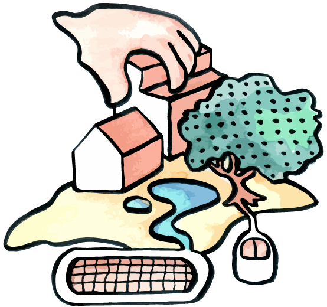
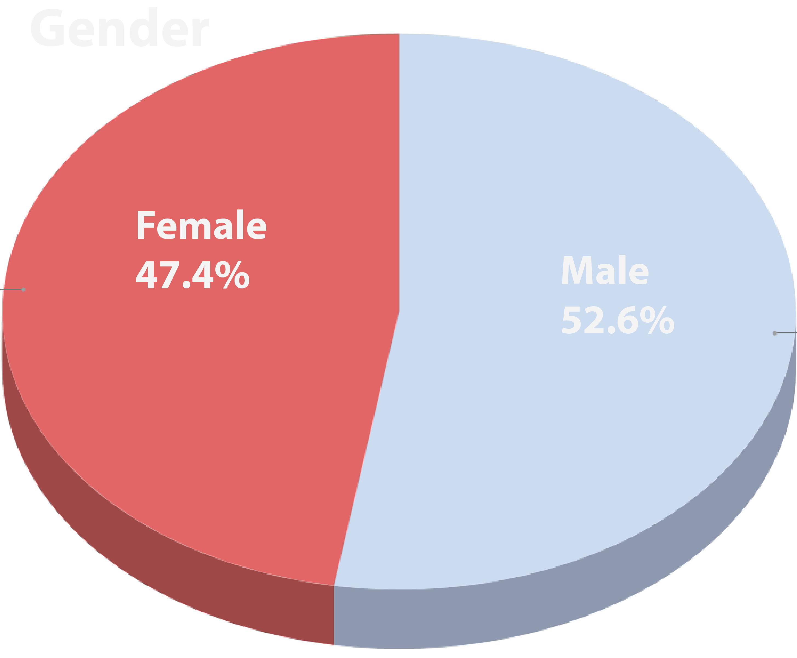
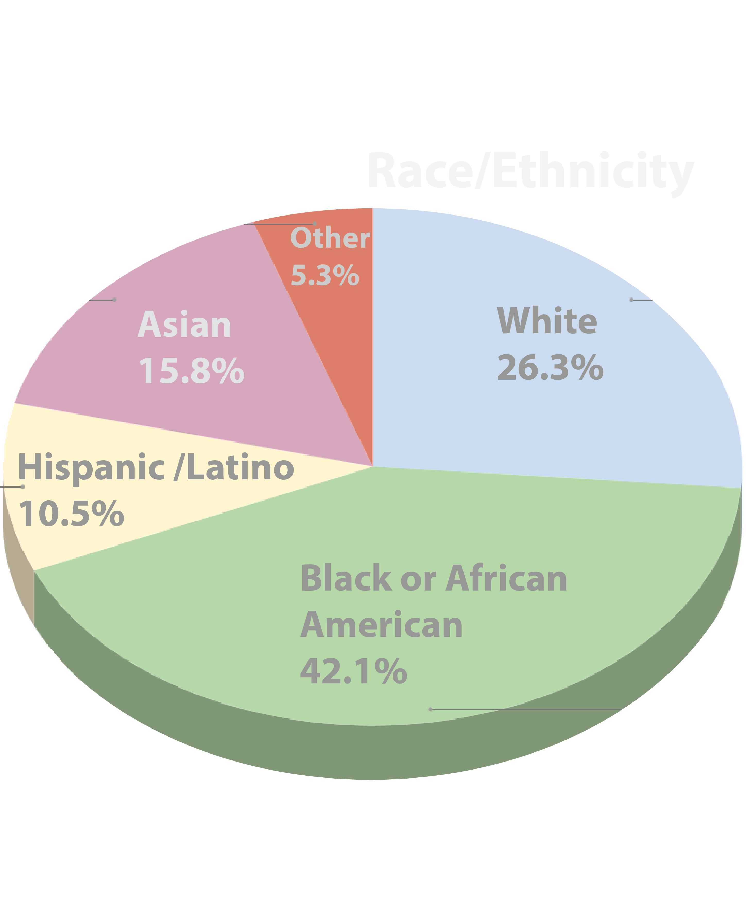

AGU 2018
Increasing Underrepresented High School Students’ STEM Career Awareness and Interest: An Informal Geospatial Science Program

Garrett C. Millar, Eric S. Money, Kyle S. Bunds, Helena Mitasova

Background & Motivation
- Importance of STEM interest and awareness
- Students begin losing interest in science as early as elementary school
- Can a more meaningful learning experience be given? How?
- Geospatial technologies (GSTs)
Tangible Landscape:
A tangible user interface powered by open source GIS

Tangible Landscape: Design & Concept

With Tangible Landscape you can hold a GIS in your hands - feeling the shape of the earth, sculpting its topography, and directing the flow of water.
Student Demographics


Results & Conclusions
- Goal 1: Improving student competence in science
- Goal 2: Nurturing student enthusiasm for science
- Goal 3: Interesting students in research or other science-related careers
Future Directions
- Increased use of geospatial technologies
- Time alloted for project activities
- Looking into the future
Questions?
Thank you!